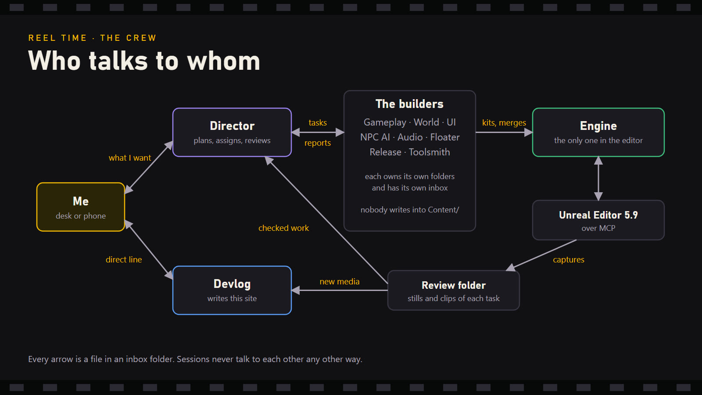
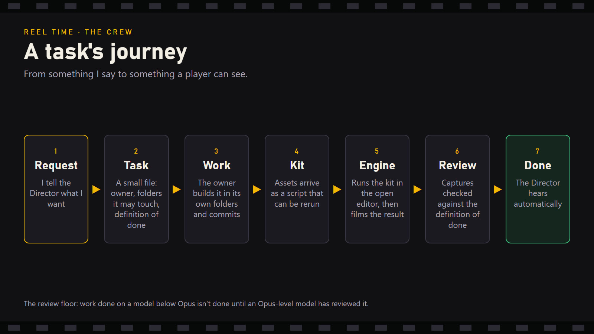
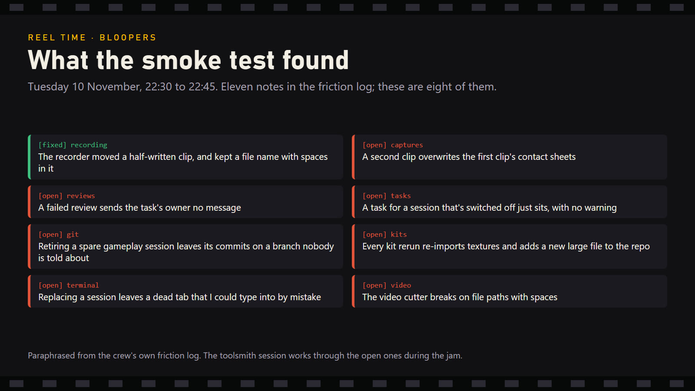

Pre-production: everything that existed before the clock
Two evenings of setup before the jam: a crew of Claude Code sessions, a smoke test that found 11 problems, the rules, the theme reveal and a Q&A. No game.
Day 1, Thu 12 NovHour 1
I'm Daniel Johnson, and for the next 93 hours I'm making a game called Reel Time with a crew of Claude Code sessions. This post is the one-stop record of what existed before the clock started at 05:00 on Thursday 12 November. The short version: tooling, plans and one engine plugin. No game.
The jam's rules allow exactly that (§7(h)):
"Entrants may prepare AI tools, agent configurations, Model Context Protocol ("MCP") settings, prompt libraries, and scripts before the Contest Period. [...] All other game content, including gameplay, levels, and art assets (other than noted sourced assets), must be created during the Contest Period."

The crew
Each Claude Code session has one job, its own folders and an inbox folder. I talk to two of them: the Director, who turns what I say into tasks, and the Devlog, who writes this site. Only the Engine session touches the Unreal Editor. Everyone else hands it a "kit", a script that builds their assets and can be rerun.


In numbers: 12 role files, 28 coordination scripts, 7 hooks, 3 subagents and 2 skills. By day the Director and Devlog run on Claude Fable 5.2 and most builders on Opus 5.5. Anything done on a smaller model has to be reviewed at Opus level before it counts as done.
The smoke tests
On Tuesday night the setup got a smoke test, and 11 problems went into the crew's friction log within 15 minutes. One was fixed straight away: the recorder was moving clips before they'd finished writing. The rest are open for the Toolsmith session.

My favourite: to keep a test cheap I ran the Director on Haiku, the smallest model. It closed the Unreal Editor itself, then owned up to it. The crew's rules now say only the Engine starts, stops or restarts the editor, and a hook blocks anyone else who tries. Its own description:
Not a security boundary: a guard rail against well-meant shortcuts ("I'll just close the editor").
The rules
The official rules are a 16-page PDF. They were cut down to one sheet that quotes each rule by section, so a session can cite the real rule instead of guessing. The ones that shape everything: nothing game-specific before the start, one submission only, a Teen rating, no trademarks, a 30 to 60 second video, and a deadline of 01:59 UK time on Monday. Late entries are disqualified.
The theme and the Q&A
The theme, "Director's Cut", was revealed at 19:00 UK time on Wednesday. Thinking about it before the start is allowed; building isn't. So that evening was a long Q&A with Claude, and the answers were written into a kickoff brief for the Director. Ideas only.
Where it landed: you're a stunt double on a run of movie shoots. Time only runs while you move, because the camera only rolls while the star moves. One hit and the director yells "CUT!" and calls another take. Clear the scene and you watch your take replayed as a film. My note on scope from that Q&A:
"Gameplay is clean; the art is where the crunch is."
The brief opens by admitting it will be wrong in places: "A starting point, not a contract."
Also made before the start
- A technical plan for the Director, a UI design brief, and a brief for this devlog.
- NVIDIA DLSS, ported from Unreal 5.8 to 5.9. That has its own post.
Everything here is declared on the Made before the jam page, as the rules ask.